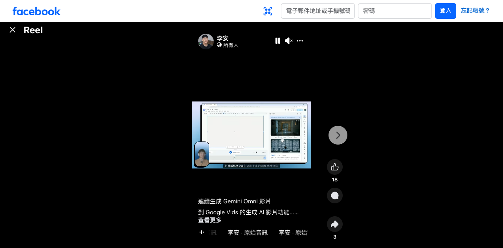

李安｜Gemini Omni 影片連續生成到 Google Vids：生成式影片功能示範

為什麼保存
這則 Facebook Reel 值得接在既有 Google Vids / Gemini Omni 條目之後：它不是只轉述官方公告，而是把「Gemini Omni 影片生成」與「Google Vids 裡的生成式影片功能」放在同一個操作畫面中，適合作為課程 demo 或工作流觀察案例。
Facebook 可見內容
原始分享連結導向 canonical：`https://www.facebook.com/reel/2507550556339945`。未登入狀態下可見資訊如下：
- 作者：李安。
- 文案可見片段：「連續生成 Gemini Omni 影片」「到 Google Vids 的生成 AI 影片功能……」。
- 音訊：李安 · 原始音訊。
- 可見互動：18 個讚；另有 3 的可見互動數字（頁面呈現位置可能為分享或留言，本文不過度推論）。
- 影片畫面：瀏覽器中的 Google Vids 或類似 Google Workspace 影片編輯介面；中央是大型白色編輯畫布，右側有素材/生成結果面板，下方有播放控制或時間軸，左下角有講者小窗。
官方查核
Google Workspace 官方 Google Vids 產品頁確認：Google Vids 是結合 Google AI 的線上影片製作與編輯工具。
Google Workspace Blog〈Gemini Omni Flash now available in Google Vids〉確認：Gemini Omni Flash 已導入 Google Vids，可用文字提示編輯影片，並可建立 personal AI avatars 等影片內容。
Workspace Updates 文章進一步列出 personal avatar 與 Gemini Omni in Vids 的可用資格、帳號方案與逐步推出限制；這代表社群影片中看到的功能，需要依帳號、方案、地區與 Workspace admin 設定判斷，不應假設所有帳號立即可用。
Gemini 官方影片生成頁則把 Gemini Omni 描述為可運用相片、參考樣式與短片製作多模態媒體，並用 AI 編輯影片。
對欒帥的可用改寫
- 課程 demo：用同一段素材示範「先生成影片，再在 Google Vids 裡組裝、微調、補字幕」。
- 行銷短片：把活動主視覺、講師頭像與課程文案轉成短片草稿，再交由人工剪輯審稿。
- 工作流教學：比較 Gemini Omni、Google Vids、Veo 與傳統剪輯的分工，讓學員理解「生成」與「編輯」不是同一件事。
- 組織導入：把 Workspace admin、方案資格、素材授權與 SynthID 標示納入流程，不只看 demo 成功率。
風險與限制
- Facebook 未登入狀態下無法取得完整影片檔、完整文案與逐秒操作細節；本文依可見畫面與官方頁面整理。
- Google Vids / Gemini Omni 功能依帳號方案、地區、年齡、語言與 Workspace 管理設定逐步推出。
- AI 生成影片可能包含 SynthID 或其他標記；公開商用前仍需確認素材授權、肖像權、品牌標誌與平台政策。
- 影片生成 demo 不等於穩定產能；課程或商業交付需保留版本、prompt、人工審稿與替代方案。
來源
- Facebook Reel：<https://www.facebook.com/reel/2507550556339945>
- Google Vids：<https://workspace.google.com/products/vids/>
- Google Workspace Blog：<https://workspace.google.com/blog/product-announcements/introducing-gemini-omni-flash-in-google-vids>
- Workspace Updates：<https://workspaceupdates.googleblog.com/2026/07/cast-yourself-in-ai-video-clips-using-your-personal-avatar-with-Gemini-Omni-in-Vids.html>
- Gemini 影片生成：<https://gemini.google/overview/video-generation/>